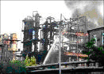
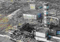

Scientific research
Annually losses around the world from accidents and accidents at the industrial enterprises average 150 billion dollars.

Safety of the industrial enterprise at its operation — it achievements of normalized level vzryvo-and fire safety on it, i.e. an exception of explosions (fires) due to reliable work of means of protection which react to inadmissible change of electric and technological parameters of the equipment, accurate work of the service personnel.
The industrial enterprise (fire and explosion hazardous shop) is considered safe if it is possible to prove that the probability of emergence of accident within a year, at its operation will be less or is equal to size 1.10-6.

Using norm 1.10-6 task of safety of the industrial enterprise it is possible to formulate as follows: what statistical information from technological object needs to be collected within a year to define level of its safety (explosion safety, fire safety) and if it appears more normalized size 1.10-6, what organizational and technical actions it is necessary to use at operation of this enterprise (the nuclear power plant, mines, gas pipelines, sea vessels, a warehouse of ammunition etc.) almost completely to exclude accidents on it.
Accident which happens at the industrial enterprise — this difficult event. Practically any accident can be presented as coincidence process in space and time: equipment failures; means of protection; mistakes of the person.

On EPG chair on the basis of Markov casual processes with discrete number of states and continuous time mathematical models which describe process of formation of accidents are developed. At the industrial enterprise dangerous concerning explosions and fires.
By means of the received mathematical models and applied programs it is possible to receive the main characteristics of safety of the studied enterprise (shop). To reveal the most dangerous concerning explosions and fires of the enterprise and to offer concrete organizational technical actions with the minimum economic expenses at which this enterprise becomes safe — it means that the probability of emergence of explosions and fires within a year at this enterprise will be size improbable.
In the direction of an assessment of safety of technological objects the chair published over 50 scientific articles.
Results of use of the research works, the “Power Supply of Industrial Companies and Cities” executed on chair:
- Technique “Detection, the account and an assessment of dangers on the electrified site of a coal mine” (it is developed by the State Makeevsky research institute on safety of works in mining industry, MAKNII; Donetsk polytechnical institute, DPI and Min's Power management углепрома USSR in 1986), 35 pages.
- Technique of an assessment of fire safety of mine cable networks, electric equipment and the electrified developments at a design stage, reconstruction and operation (DPI is developed, NPO “Respirator” in 1989), 25 p.
- Technique of an assessment and increase of fire safety of systems of power supply of gas fields of northern regions of the Tyumen region (DPI, YuzhNIIgiprogaz is developed, ON “Yamburggazdobycha” in 1990), 31 p.
- Technique of detection, the account and assessment of probable dangers in systems of power supply of gas fields of northern regions of the Tyumen region (DPI, YuzhNIIgiprogaz is developed, ON “Yamburggazdobycha” in 1990), 23 p.
- Technique of an assessment and electrical safety increase at electric equipment operation pozharo-and explosive shops of gas fields of northern regions of the Tyumen region (DPI, by the State academy of oil and gas of I.M. Gubkin is developed, ON “Yamburggazdobycha” in 1993), 20 p.
- Technique of an assessment of probability of emergence of fire and explosion situations in systems of power supply of gas fields, on technological installations and rooms in which they are exploited (it is developed by the State academy of oil and gas of I.M. Gubkin, Donetsk state technical university and RJSC “Gazprom” in 1995), 33 p.
- Technique of an assessment of explosion safety of deadlock developments of coal mines at electric equipment operation in them (The first edition. It is developed by the State Makeevsky research institute on safety of works in mining industry, Donetsk state technical university in 1999), 31 p.
- Technique of an assessment of level of safety of systems of power supply of gas fields, technological installations, electric equipment and means of protection at their operation (it is developed by the Russian state university of oil and gas of I.M. Gubkin, RJSC “Gazprom”, Donetsk state technical university in 2000), 66 p.
- Technique of an assessment of electrical safety of electric equipment on sites of coal mines (The first edition. It is developed by the State Makeevsky research institute on safety of works in mining industry, Donetsk state technical university in 2002), 40 p.
More than 90% of fires in electric networks of inhabited apartments occur at casual emergence of weakened and dangerously scintillating contact connection in a power electric network that leads to inadmissible overheats of power contact connection, and it in turn leads to ignition of isolation of conductors or ignition of combustible materials which are near dangerously heated power contact connection (wall-paper, carpets, wooden overlappings, false ceilings, etc.).
Protective switching devices now in use don't react to similar emergency operation.
The prototype of protection which allows to reveal weakened and dangerously scintillating power contact connections is developed and constructed. Protection is based on allocation of high-frequency fluctuations of current of the industrial frequency of 50 Hz with their further processing and giving on executive bodies of the industrial device of protective shutdown (DPS).
When using the offered device of protection at the same time with UZO in electric networks of inhabited apartments reduction of fires for 90% is predicted. Across Donetsk region the number of fires will be reduced by 4211 cases, and expected economic effect of reduction of fires makes 45587 yew. UAH a year.
On a subject of research four patents are taken out and a number of articles is published.
Annually chair organizes conference on questions modern power supply. On a conference і ї carry out reports students, graduate students and teachers from universities of Donetsky area, Ukraine and CIS countries. The head of committee of conference — Kovalyov A.P.
The main scientific directions and problems which are solved on EPG chair:
- Development new and development of existing methods of an assessment of reliability of systems of power supply of the industrial enterprises and survivability of knots of loading;
- Forecasting of emergence of accidents and accidents at the industrial enterprises dangerous concerning explosions and fires;
- Development of mathematical models and calculation procedures for forecasting of explosion safety and fire safety of inhabited apartments;
- Development of recommendations about prevention of explosions of household gas in apartments;
- Development of means of protection which react to weakened and dangerously heated power contact;
- Development of the new device for definition of the damaged phase (leakage of current on the earth) in networks to 1000 V with the isolated neutral;
- Development new and improvement of existing methods of an assessment and synthesis of an iskrobezopasnost of chains of explosion-proof electric equipment.
Chair researches today

Since 2003 on chair research work within state subject on research of possibility of clearing of a flame by electric field is conducted.
Relevance of a subject is defined by complexity of modern fire protection systems, need of use for them metal-consuming and demanding periodic replacement of the extinguishing means.

The experimental installation consisting of the power unit (the raising transformer, the rectifying high-voltage bridge, protection system), the control panel with possibility of giving on electrodes high (to 75 kV with a frequency of 50 Hz) tension was developed. The torch is a source of a flame.